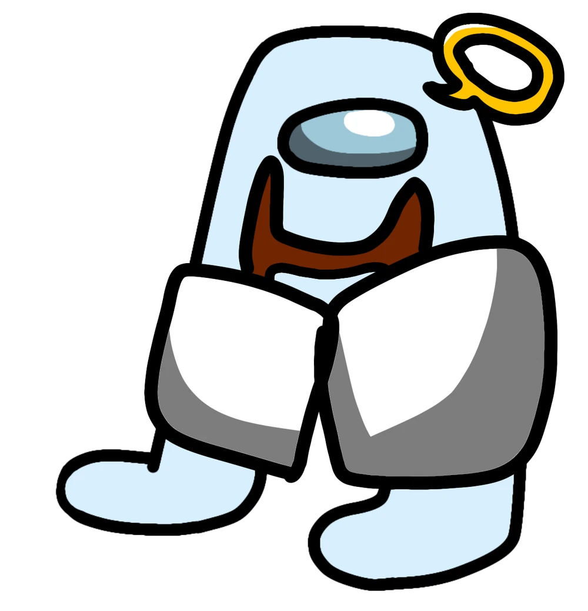
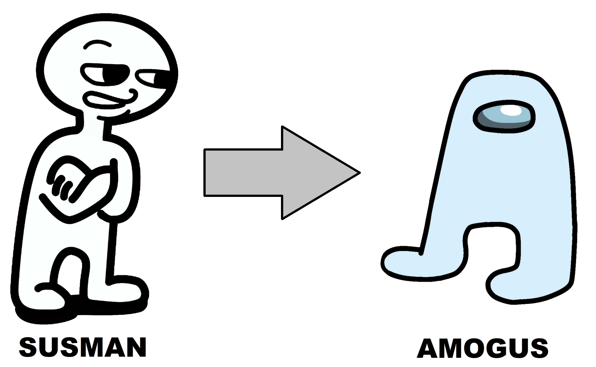

Bůh Amogů
Zafodus
Bůh má mnoho jmen, mezi nejznámější patří: SusGod, God of Sus, AmoGod, S U S, Godus, Godissus a z historie od vzniku Sussiverse taktéž nazývaný jako Medjed. Někdy je také znán pod iniciály HH, zatím se ale nikomu nepovelo rozluštit co znamenají tyto iniciály. Nejčastěji ale nazýván jako Zafodus.
Zafodusovy síly
Zafodus je stvořitelem nákazy SUSSED. Dokáže nakazit Susmana (lidský obyčejný obyvatel Země), který se náhle promění na Amoguse. Tato proměna je nevratná a nezastavitelná. Jediným omezením je že jedinec musí alespoň jedenkrát odehrát hru Among us a někoho podezřívat. Tato proměna zahrnuje jak tělesnou změnu, tak změnu v chování. Již proměněný jedinec není schopný komunikovat bez zahrnutí slova sus do každé věty. Tyto bytosti již nežijí na Zemi ale na místě zvaném Amgo.
Nákaza SUSSED
Sussed je nemoc stvořena bohem Zafodus. Jde o plyn s náhlým účinkem proměnit Susmana na Amoguse. Je zvláštní že proměnění jedinci si nestěžují, nýbrž právě uctívají a děkují bohovi za jeho obrovskou velkorysost.
Chování způsobené nákazou SUSSED
- Jedinec na vše ukazuje prstem a přitom řve: "S U S"
- Jedinec trpí paranojou. Podle informací vidí ve všem tvary Amoguse
- Jedinec nepředvídatelně vykřikuje tato slovní spojení: "On se vetnul!", "To je SUS!" "Já nejsem SUS!" "Nemáš ambice!"
Jak se chránit a co dělat
Nehrát Among Us ... ano to je sus
Pokud u sebe nacházíte podobné chování, tak prosím neodkladně kontaktuje policii (doktor vám již nepomůže). Udělejte to aspoň pro své známé!
Pokud si všimnete někoho kdo kolem sebe vyvolává podobné chování, tak se mu prosím nesnažte pomoc a raději si držte odstup od jedince a kontaktujte policii.